Создание игр в Roblox Studio
Создание квеста. Часть 2
Создание аксессуаров
В этом занятии мы завершим создание квеста и сделаем аксессуар, на который будет выдаваться в качестве награды, добавим к нему специальные эффекты, после чего допишем скрипты, созданные в прошлых занятиях таким образом, чтобы по выполнению квеста NPC выдавал предмет в качестве награды.
Создание собственных аксессуаров
Предмет, выдающийся в качестве награды, будет представлять из себя базовый аксессуар, который мы создадим самостоятельно.
Необходимо найти тот аксессуар, который вы подготовили в домашнем задании, и добавить его в сцену. Фактически, этот аксессуар уже готов к использованию в качестве награды, однако, мы превратим его в базовую модель, чтобы научиться создавать аксессуары самостоятельно.
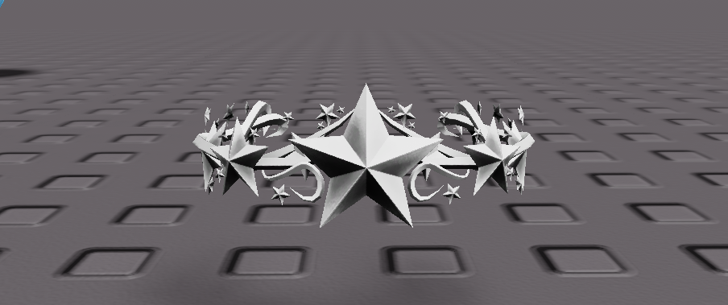Раскройте иерархию аксессуара в окне Explorer. Внутри каждого аксессуара есть ключевой объект Handle, внутри которого находится сама 3D-модель и дополнительные специфические объекты.
Найдите объект Mesh (это модель, которую использует аксессуар) и найдите в окне Properties его параметры MeshID и TextureID. Это - параметры, указывающие пути к 3D-модели и её текстуре на сайте Roblox:
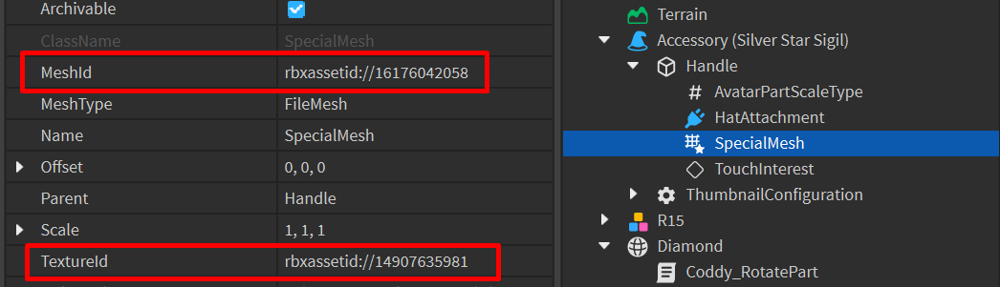Чтобы скопировать модель, использующуюся в аксессуаре, создайте новый объект MeshPart в Workspace:
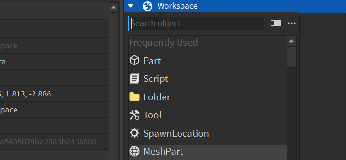Скопируйте параметры MeshID и TextureID в соответствующие параметры созданного вами объекта MeshPart. Таким образом вы скопируете 3D-модель. Удалите изначальный аксессуар.
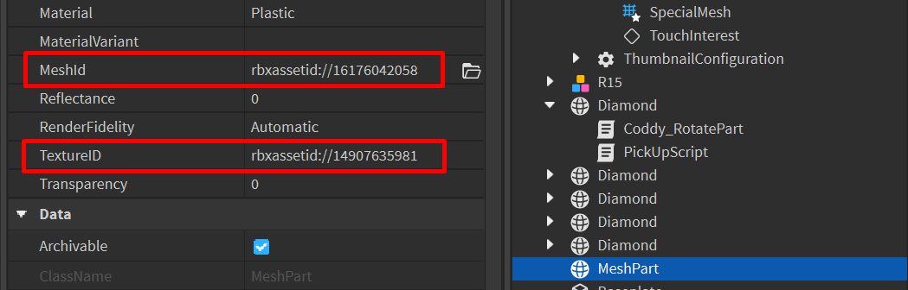Теперь из полученной 3D-модели можно создать аксессуар.
Accessory Fitting Tool
Прежде чем переходить к работе с плагином, создайте через Rig Builder дополнительный риг персонажа, который будет использоваться как манекен. Поставьте его в произвольном месте уровня.
Перейдите в раздел Avatar и откройте Accessory Fitting Tool. После открытия окна плагина, выберите ваш предмет, после чего нажмите на кнопку Next.
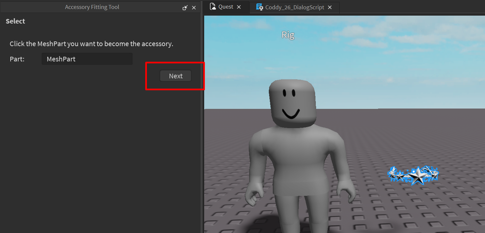Укажите тип создаваемого аксессуара. В качестве примера используется корона, которая должна крепиться на голову, поэтому будет выбран вариант Hair. Дополнительно настройте тип тела персонажа (например, Realistic Normal). Выберите свой вариант и нажмите Next.
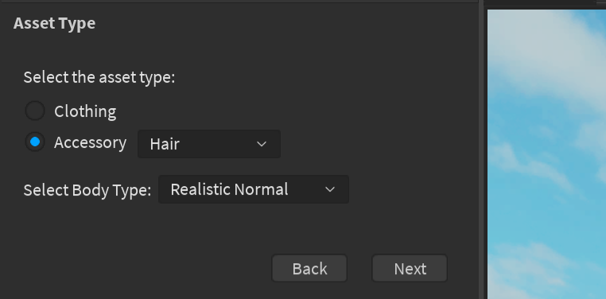На этом этапе необходимо настроить положение аксессуара на персонаже. По умолчанию используются нестандартный манекен, поэтому необходимо заменить его на персонажа, добавленного ранее.
Нажмите на + в круге внутри окна плагина и выберите опцию добавить. В окне Explorer выберите манекен и подтвердите выбор в плагине.
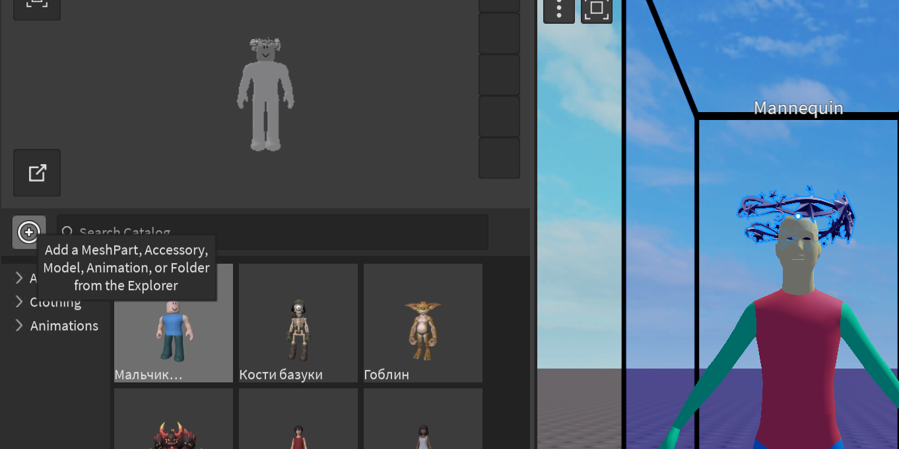После этого кликните на добавленного персонажа в списке доступных, все остальные персонажи должны быть выключены (для выключения также кликните на них):
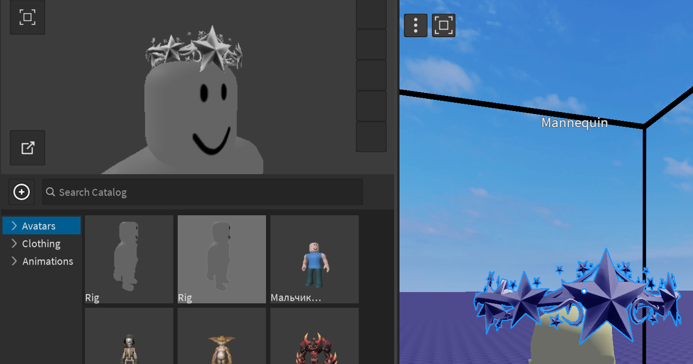При помощи базовых инструментов перемещения, поворота и масштаба расположите аксессуар так, чтобы он правильно смотрелся на вашем манекене (предпросмотор доступен в отдельном окошке внутри плагина). Подтвердите создание аксессуара кнопкой Generate Legacy Accessory (этот вариант предназначен для жестких аксессуаров, которые не меняют свою форму).

Готово! Теперь этот аксессуар можно использовать, как и любой другой, добавленный из Avatar Shop.
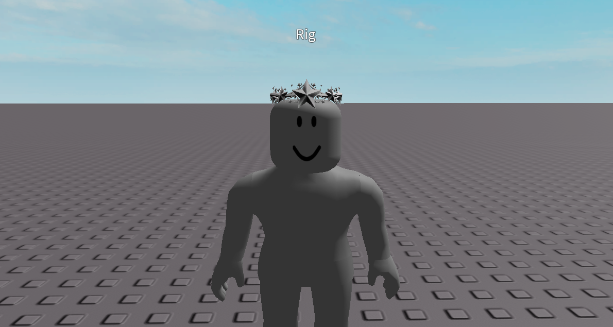Добавление специальных эффектов
Чтобы предмет выглядел более уникальным, добавим специальный эффект, который будет генерировать выбранные нами картинки и испускать их из аксессуара.
Все эффекты Roblox Studio работают на основе технологии ParticleSystem. Этот подход используется во всей игровой индустрии и работает следующим образом: в пространстве создается точка, из которой появляются спрайты - плоские картинки с прозрачным фоном, на которых нарисована какая-то часть эффекта.
Спрайты - очень лёгкие с точки зрения производительности объекты, поэтому современные движки могут генерировать их тысячами без потерь производительности. Они распространяются в пространстве по заданным траекториям, благодаря чему имитируют поведение своих прототипов из реальной жизни.
Каждый спрайт - отдельно созданный объект, имеющий свою траекторию движения и настройки параметров, определяющих его внешний вид. Чаще всего эти параметры меняются в течение времени, благодаря чему полученные эффекты выглядят сложно и хаотично.
Эффект ParticleEmitter
Все эффекты Roblox Studio строится на основе базового эффекта - ParticleEmitter. Добавьте этот эффект к компоненту Handle вашего аксессуара.
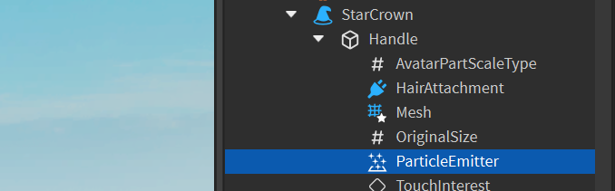Заменим спрайты, которые эмиттер генерирует по умолчанию, на что-то более подходящее. Откройте Toolbox и в разделе Decals найдите подходящий спрайт. Нажмите на него правой клавишей мыши и скопируйте ID:
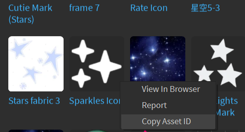Вставьте полученный ID в параметр эмиттера Texture в окне Properties:
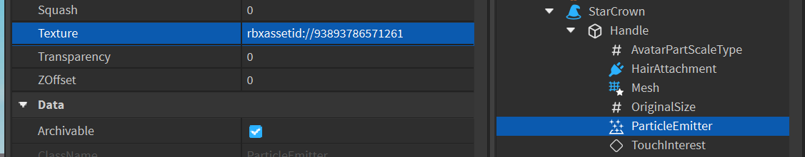Далее, изменяя параметры эмиттера, настройте эффект так, чтобы он выглядел сложнее и интереснее.
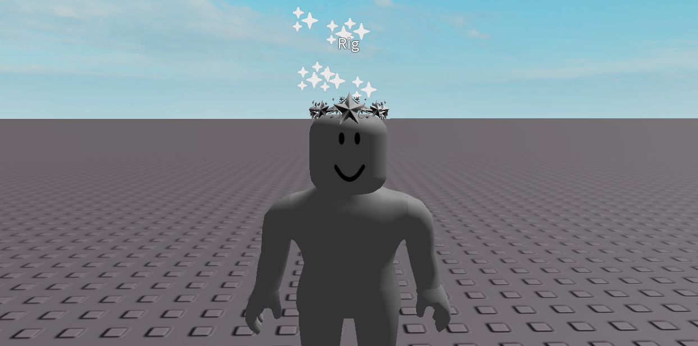Аксессуар готов! Переименуйте его подходящим образом и переместите в ReplicatedStorage.
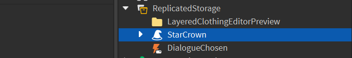Все объекты, которые необходимо использовать несколько раз внутри игры и при этом не размещать их изначально в карте, хранятся в ReplicatedStorage. Это - специальное хранилище, в котором лежат объекты, доступные для клонирования и использования в процессе игры.
Завершение квеста
В последней части занятия добавим в скрипты команды, позволяющие завершить квест и получить награду от NPC.
После того, как игрок соберет все пять предметов, NPC должен проверить, достаточно ли предметов собрано и в зависимости от этого либо выдать награду, либо отправить игрока собирать достаточное количество предметов.
Проверка завершения квеста
Откройте диалоговый скрипт. В первую очередь добавим обновления текущего количества собранных предметов с помощью двух переменных:
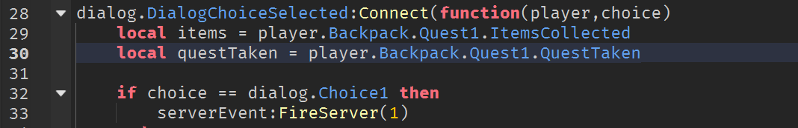После этого в обработку первого варианта ответа в диалоге добавим условие, в котором проверим, активен ли квест и собрал ли игрок достаточное количество предметов:
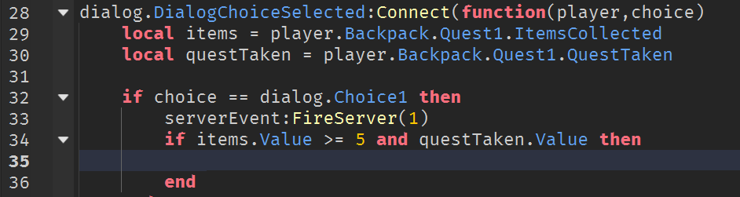В случае, если количество предметов достаточное, должны поменяться реплики NPC и реплики ответа персонажа:
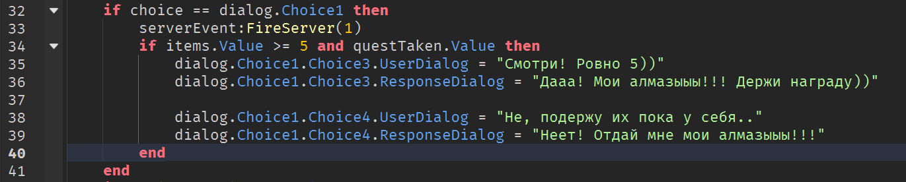Добавим дополнительный вариант на случай, если игрок начал диалог с NPC, не собрав достаточное количество предметов:

Запустите игру, активируйте квест и проверьте оба варианта:

Выдача награды
Теперь необходимо добавить часть скрипта, в которой NPC выдаст игроку награду за успешно выполненный квест. Это вариант ответа Choice3. Добавьте обработку условия выполненного квеста:
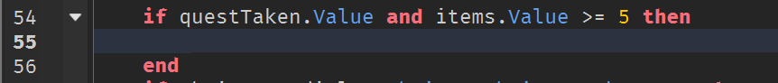Так как NPC - северный объект, а игрок - объект локальный, необходимо использовать удалённое событие и серверный скрипт. Добавьте удалённое события в ReplicatedStorage и назовите его Reward:
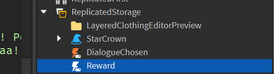В диалоговом скрипте добавьте вызов этого события, указав путь к вашему объекту в ReplicatedStorage. После того, как событие произойдёт, диалог должен самоуничтожиться, чтобы исключить повторное прохождение квеста.
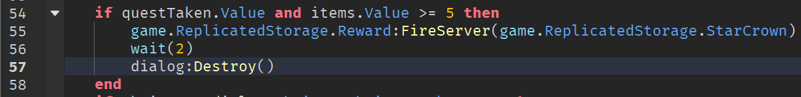Добавьте скрипт в ServerScriptStorage и назовите его GiveReward. Напишите скрипт:

Это скрипт клонирует объект, указанный во втором параметре, и добавляет его игроку из первого параметра. Также он увеличивает высота прыжка нашего персонажа.
Запустите игру, выполните квест и проверьте, выдаётся ли награда:

Домашкаа 😁
Это занятие завершает 7 модуль курса, посвященный работе с неигровыми персонажами.
-
Что такое NPC?
- Nested Programming Code - вложенный программный код
- Non-Playable Character - неигровой персонаж
- Never Practing Child - ученик, который не выполняет домашние задания :(
-
Как добавить NPC в игру?
- Запустить игру, скопировать игрового персонажа и вставить в сцену
- Написать скрипт, загружающий персонажа с сервера и запусить его
- Использовать плагин Rig Builder
-
Как поменять текстуру стандартной футболки или штанов персонажа?
- Загрузить картинку из ToolBox и вставить в группу персонажа
- Скопировать ID с сайта Roblox и вставить в параметр Texture
- Купить в магазине за Robux
-
Какой плагин добавляет в игру объёмную одежду из каталога Roblox?
- Import Asset
- Cloth Creator
- TShirt Master
-
Какой компонент позволяет NPC разговаривать?
- Head
- Local Script
- Dialog
-
Что такое DialogChoice?
- Компонент, содержащий првильный ответ на вопрос NPC
- Параметр, переключающий набор фраз в диалоге
- Специальный объект, добавляющий вариант ответа на реплику NPC
-
За что отвечают параметры UserDialog и ResponseDialog?
- UserDialog содержит ответ игрока, ResponseDialog - следующую фразу NPC
- ResponseDialog содержит фразу NPC, UserDialog - ответ на неё
- UserDialog содержит все возможные ответы игрока, ResponseDialog - все фразы NPC
-
Как создать квест, выдаваемый игроку через диалог NPC?
- Добавить спеуциальный объект QuestLine и натсроить его, выбрав тип квеста
- Выбрать тип квеста Quest и заполнить дополнительные параметры
- Создать скрипты, отслеживающие прогресс квеста и добавить игроку специальные внешние переменные
-
Как поменять реплики NPC после выполнения квеста?
- Добавить скрипт, проверяющий статус квеста и заменяющий реплики веток диалога
- Использовать плагин DialogManager в режиме квест
- Написать серверный скрипт, автоматически подменяющий объекты Dialog
- Все варианты верны
-
В какой папке игрока нужно разместить переменные, чтобы они сохранялись после смерти?
- ServerScriptStorage
- ReplicatedStorage
- StarterPlayer
- StarterPack